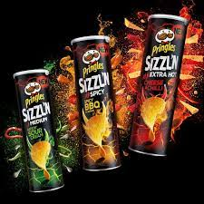

PRINGLES
Pringles have about 42% potato content, the remainder being wheat starch and flours (potato, corn, and rice) combined with vegetable oils, an emulsifier, salt, and seasoning.[16] Other ingredients can include sweeteners such as maltodextrin and dextrose, monosodium glutamate (MSG), disodium inosinate, disodium guanylate, sodium caseinate, modified food starch, monoglyceride and diglyceride, autolyzed yeast extract, natural and artificial flavorings, malted barley flour, wheat bran, dried black beans, sour cream, cheddar cheese, etc.; Pringles varieties vary in their ingredients.[24]
Pringles also produces several "tortilla" and "multi-grain" varieties which have some of their base starch ingredients replaced with corn flour, rice, wheat bran, black beans,[25] and barley flour.[26] At one point in the early 1990s, "Corn Pringles" were available; the canister was black and had cartoon images of corn. The chips were made of corn and resembled a corn chip in flavor and texture. Rice Pringles were also available in the UK although they have since been discontinued.
